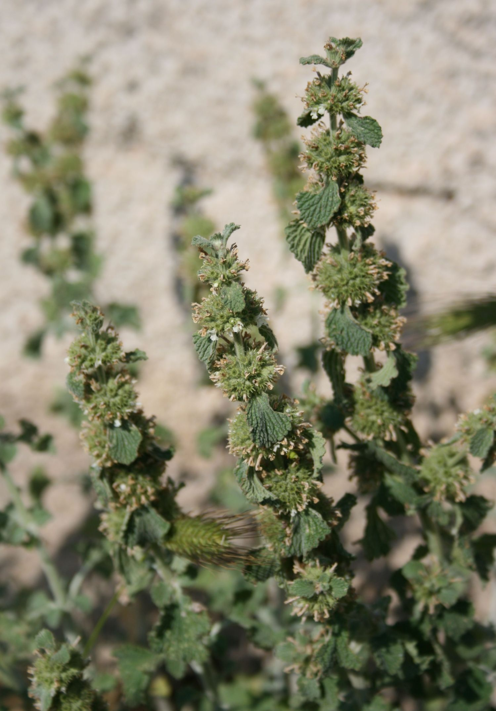

Marrubium vulgare
| common name | horehound | |
| en español | marrubio | |
| plant family | Lamiaceae (mint) | |
| parts used | fresh and dried aerial parts |
 from Wikimedia Commons by Franz Xaver, CC BY-SA 3.0
observations/description
dried leaf
- fluffly grey-green leaf, some bits of stem
- sweet, pungent aroma, a little reminiscent of hibiscus
"Marrubium vulgare", Wikipedia
- leaves are grey with a densely crinkled surface and covered in downy hairs
- flowers are white, borne in clusters on the upper part of the main stem
distribution/conservation status
"Marrubium vulgare", Wikipedia
- native to Europe, northern Africa, and southwestern and central Asia.
- emerged in the region between the Mediterranean Sea and Central Asia and now inhabits all continents
- widely naturalized in many places, including most of North and South America
- highly unpalatable to livestock so other plants around it are eaten instead, which favors the persistence and spread of the weed
- considered an invasive weed in Australia and New Zealand
- listed as 'Near Threatened' on IUCN Red List of Threatened Species
primary actions
The Yoga of Herbs, p. 204
- expectorant, antispasmodic, diaphoretic
The New Age Herbalist, p. 68
- bitter, expectorant, vasodilator, diaphoretic, nervine, sedative, bitter tonic, cholagogue, hepatic
The Modern Herbal Dispensatory, p. 248
- anti-arrhythmic, bitter, cardiac, decongestant, expectorant
notes from class, 19 May 2025
- anti-inflammatory, antispasmodic, antitussive, expectorant, aromatic, bitter, diaphoretic, diuretic, emmenagogue, mucostatic, stimulant
system affinities
respiratory, cardiovascular, digestive
primary uses
The New Age Herbalist, p. 68
- used for respiratory disorders
- bitter principle and volatile oil have expectorant property
- volatile oil also dilates the arteries
- calms a nervous heart
- marrubiin has a normalizing effect on irregular heartbeats
- tisane induces a sweat
- macerate is a good bitter tonic for the digestive system
- marrubiin stimulates bile production as it breaks down in the body
- reduces fevers and treats malaria
The Modern Herbal Dispensatory, p. 248
- traditionally used to make cough drops/syrup
- increases secretion of thinner mucus to break up congestion
- remedy for coughing, wheezing, difficulty breathing
- stimulates digestion
- mild cardiac effect
notes from class, 19 May 2025
- strong stimulating expectorant
- taste may be too bitter for infusion (unless as a small part in formulation with other more pleasant herbs)
- indicated for whooping cough, cold, asthma, pulmonary issues, bronchitis, bronchiolitis, pneumonia, fevers
- eliminates fluid and mucus in the lungs/chest, cleansing for the lungs
- good for acute and chronic conditions
- some analgesic properties as well
- hot infusion good for diaphoretic action, cold better for diuretic action
energetics
The Yoga of Herbs, p. 204
- reduces kapha, pitta; increases vāta
- bitter/pungent taste - pungent post-digestive effect
- cooling
The Modern Herbal Dispensatory, p. 248
- cooling, drying
notes from class, 19 May 2025
- acrid, bitter, pungent, salty
- cooling, drying, warming
pharmacology
The New Age Herbalist, p. 68
- marrubiin (bitter principle, up to 1%), diterpene alcohols (incl. marrbiol and murrubenol), small amounts of alkaloids, traces of volatile oil, a sesquiterpene, tannin, saponin, resin
contraindications/pharmaceutical interactions/warnings
The Modern Herbal Dispensatory, p. 248
- use with caution during pregnancy
notes from class, 19 May 2025
- contraindicated for kidney stones, gallbladder disease, pregnancy
preparations
The Modern Herbal Dispensatory, p. 248
- standard infusion
- dried leaf, 30 g: 1 L
- tincture
- dried leaf, 1:5, 60% alcohol
Herbal Materia Medica, p. 25
- cold infusion
- dried flowering herb, 1:32
- tincture
- fresh flowering herb, 1:2
- dried flowering herb, 1:5, 50% alcohol
dosage
The Modern Herbal Dispensatory, p. 248
- standard infusion: 4-8 oz, 3/day
- tincture: 0.5-3 mL, 3/day
Herbal Materia Medica, p. 25
- cold infusion: 2-4 oz, up to 4/day
- tincture: 30-90 drops, up to 4/day
extra information
personal experiences/simples
macerate (1+ tbsp: 16 oz, 12 hours), dried leaf
- aroma is less hibiscus-y, still sweet and pungent; can see from the aroma why it is commonly made into syrup/candy
- quite bitter up front!
- sweet/floral notes come through after the bitterness, quite delicious
- i suspect this is in ricola
- the main body of the flavor is quite lemony and sweet and floral
- friend, would be great in bitter tincture/liqueur
- experiencing a lightening/opening nervine effect
witchcraft
The Witch's Encyclopedia of Magical Plants, p. 162-3
- believed to have the power to break magic spells, provide protection from witches, and ward off evil spirits
- elements: air, earth
- astrological influence: gemini, scorpio, virgo, mercury
recipes
sources
Easely, Thomas and Steven Horne. The Modern Herbal Dispensatory (2016)
Frawley, David and Vasant Lad. The Yoga of Herbs: An Ayurvedic Guide to Herbal Medicine (1986)
Goldberg Blackthorn, Samantha. Ace of Cups Herbal Medicine and Botanical Magic Herbal School (2024)
Kynes, Sandra. The Witch's Encyclopedia of Magical Plants (2024)
Mabey, Richard et al. The New Age Herbalist (1988)
"Marrubium vulgare" on Wikipedia. Retrieved 9 June 2025.
Moore, Michael. Herbal Materia Medica, Fifth Edition (1995)